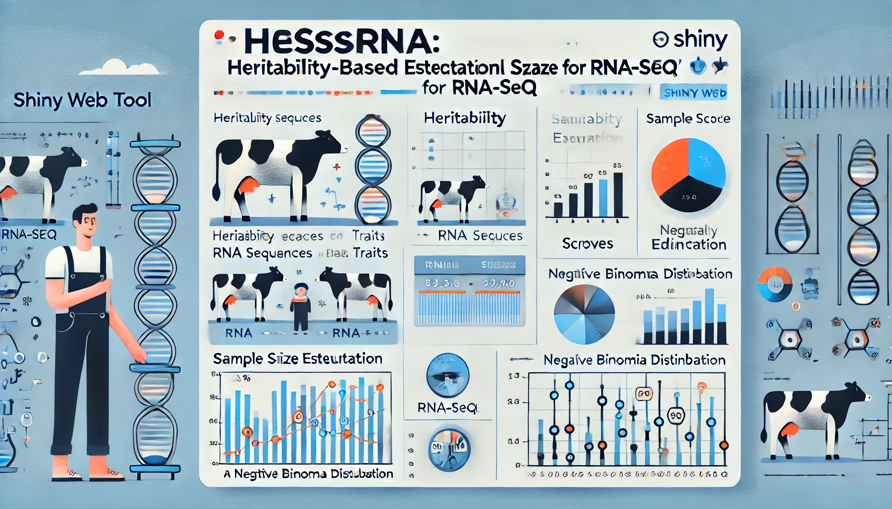

|
HEssRNA is a shiny based web tool that helps researchers to estimate sample size for conducting an experiemnt using RNA-Seq data. The estimation of sample size before conducting an experminet is crucial for getting optimum results. This tool incorporates the use of heritability traits of Bos taurus from the CorrDB database and helps in estimating the sample size based on the heritabilty score of a trait. We have grouped the heritability traits into three different groups based on their mean heritability scores from CorrDB namely, high, mid and low heritable traits. In this study we have derived the relationship between heritabilty group and power of discrimination of DEGs and thus the sample size. |
 |